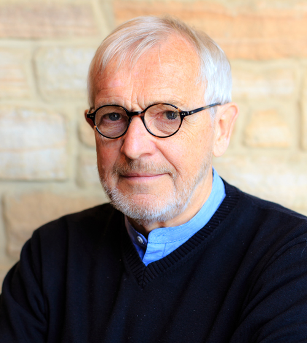

IUPAP-TIFR-Locus Prize
The IUPAP-TIFR Homi Bhabha Award (Certificate, Medal and Prize) was established by the International Union of Pure and Applied Physics (IUPAP) and the Tata Institute of Fundamental Research (TIFR), Mumbai, India in 2010 to honor Dr. Homi Jehangir Bhabha, a cosmic ray physicist well-known for the Bhabha-Heitler cascade theory and relativistic positron-electron scattering, also known as Bhabha scattering. Homi Bhabha founded the TIFR in 1945 and initiated the nuclear energy program in India in 1951 with strong support from the well-known philanthropist and industrialist JRD Tata and the Government of India then led by Prime Minister Jawaharlal Nehru. Homi Bhabha initiated experimental programs for the study of cosmic ray particles and their interactions with instruments either carried aloft to the top of the atmosphere with balloons or placed in laboratories at high altitude or deep underground. The Homi Bhabha Medal and Prize consists of a certificate, a medal, a significant monetary award and an invitation to visit the TIFR, Mumbai, and the Cosmic Ray Laboratory, Ooty to give public lectures there, and will be awarded biennially at the International Cosmic Ray Conferences (ICRCs), held generally in odd numbered years.
The IUPAP-TIFR Homi Bhabha Award will be given to an active scientist who has made distinguished contributions in the field of cosmic ray physics over an extended academic career. The winner of the prize will be selected by the members of the C4 and a senior cosmic ray scientist nominated by the Director, TIFR. The winner of the 2023 prize will be announced at the opening session of the 38th ICRC 2023, on 26 July 2023, and invited to visit India at a mutually convenient time thereafter to deliver two public lectures. The Director, TIFR will present the Homi Bhabha medal and the monetary award to the winner on this occasion. The winner will be provided with reasonable travel expenses and local hospitality for the visit to TIFR, Mumbai and Cosmic Ray Laboratory, Ooty in India.
Nominators are encouraged to consider nominating women and persons from minority backgrounds in line with the IUPAP objective of a better reflection of geographic and gender balance. Nominations should include a letter supporting the case, the nominee’s curriculum vitae, and a list of important publications. The sponsor may also wish to ask two co-sponsors to send separate letters supporting the nomination.
Prof. Takaaki Kajita
Chair of the IUPAP C4 Commission (Astroparticle Physics)
E-mail address: nomination_C4@icrr.u-tokyo.ac.jp
The deadline for the receipt of nominations is 10
March 2023.
Self-nominations will not be considered.
A list of the previous winners can be also found at the website of C4.
Past Winners
1. Prof. Sir Arnold Wolfendale, Durham University, United Kingdom
Awarded in "32nd ICRC 2011, Beijing"
Visited India in November 2014 and delivered public lectures
1. At Cosmic Ray Laboratory, Ooty
Title : Art & Science
Venue : Anna stadium, Ooty on 13-11-2014 14:00 Hrs
2. At Tata Institute of Fundamental Research, Mumbai
Title : Cosmic Rays and Cosmology
Venue : Dr. Homi Bhabha Auditorium, TIFR, Mumbai on 17-11-2014 17:00 Hrs
2. Prof. Heinrich J. Völk, Max-Planck-Institute for Nuclear Physics, Germany
Awarded in "33rd ICRC 2013, Rio de Janeiro"
Visited India in Jan 2016 and delivered public lectures
1. At Cosmic Ray Laboratory, Ooty
Title : Cosmic Rays, their sources, and their movement in the Galaxy
Venue : Anna stadium, Ooty on 27-01-2016 14:00 Hrs
2. At Tata Institute of Fundamental Research, Mumbai
Title : Cosmic Rays from our Galaxy
Venue : Dr. Homi Bhabha Auditorium, TIFR, Mumbai on 29-01-2016 17:00 Hrs
3. Prof. Thomas K. Gaisser, Bartol Research Institute, University of Delaware, USA
Awarded in "34th ICRC 2015, The Hague"
Visited India in Jan 2017 and delivered public lectures
1. At Cosmic Ray Laboratory, Ooty
Title : Cosmic particles - messengers from outer space
Venue : Anna stadium, Ooty on 18-01-2017 14:00 Hrs
2. At Tata Institute of Fundamental Research, Mumbai
Title : Cosmic-rays with IceCube and IceTop at the South Pole
Venue : Dr. Homi Bhabha Auditorium, TIFR, Mumbai on 20-01-2017 17:30 Hrs
4. Prof. Subir Sarkar, University of Oxford, United Kingdom and Niels Bohr Institute, Copenhagen, Denmark

Awarded in "35th ICRC 2017, Busan"
Visited India in Dec 2018 and delivered public lectures
1. At Cosmic Ray Laboratory, Ooty
Title : Connecting inner space and outer space
Venue : HADP auditorium, Ooty on 17-12-2018 14:00 Hrs
2. At Tata Institute of Fundamental Research, Mumbai
Title : Connecting inner space and outer space
Venue : Dr. Homi Bhabha Auditorium, TIFR, Mumbai on 07-01-2019 17:30 Hrs
5. Prof. Takaaki Kajita, Institute for Cosmic Ray Research, Tokyo, Japan and University of Tokyo, Japan
Awarded in "36th ICRC 2019, Madison, WI"
6. Prof. Francis Halzen, University of Wisconsin, Madison, USA
Awarded in "37th ICRC 2021, Berlin"
7. Prof. Samuel C. C. Ting, MIT, USA
Awarded in "38th ICRC 2023, Nagoya"